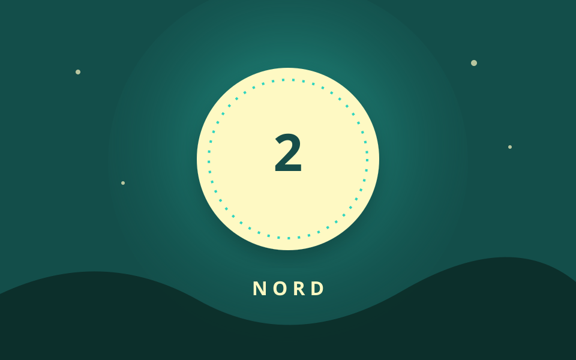

Station 2 von 5

Vier Wege, ein Ziel
Ich habe eine Nadel, doch ich kann nicht nähen. Ich zeige euch Wege, ohne selbst zu gehen.
Eure Aufgabe
In welche Himmelsrichtung zeigt meine markierte Spitze?
Tipp anzeigen
Auf Karten liegt diese Richtung normalerweise oben.